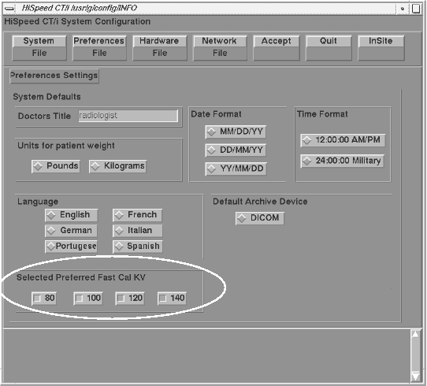

Operating Documentation
Direction 5193891-800, Rev# 5
LightSpeed 5.X Pro16 Limited Access Service Information (Adv)
Operating Documentation |
The Preferred FastCal feature allows the site to tailor the total number of FastCal scans to what kV techniques they use when scanning patients. For example, if a site scans patients using two of the four available kVs, FastCal can be configured in reconfig to run with just those kV scans, thereby speeding up the total time to run FastCal by 50%.
To customize FastCal scans by kV, do the following:
Shutdown applications:
If you are not already on the Service Desktop, select the [SERVICE DESKTOP] icon.
Select the [UTILITIES] icon.
Select [APPLICATION SHUTDOWN] .
Open a [UNIX SHELL] from the toolchest menu on the desktop.
su -<ENTER>
Enter root password
reconfig <ENTER>
Select [PREFERENCES] . Refer to Illustration 1. Make kV choices in the “Selected Preferred FastCal kV” area.
Illustration 1: Preferences Setup Screen

Reconfig creates a new configuration file for preferred FastCal in the /usr/g/config directory with file name PreferFastCal.cfg.